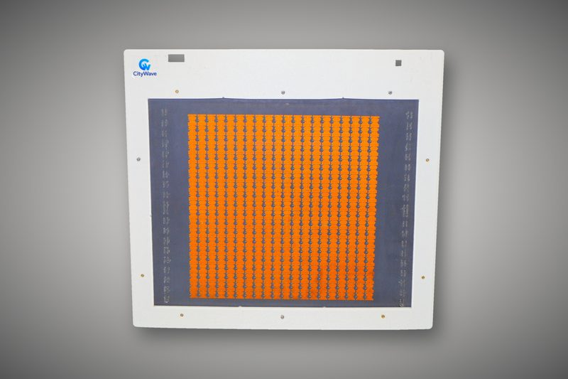
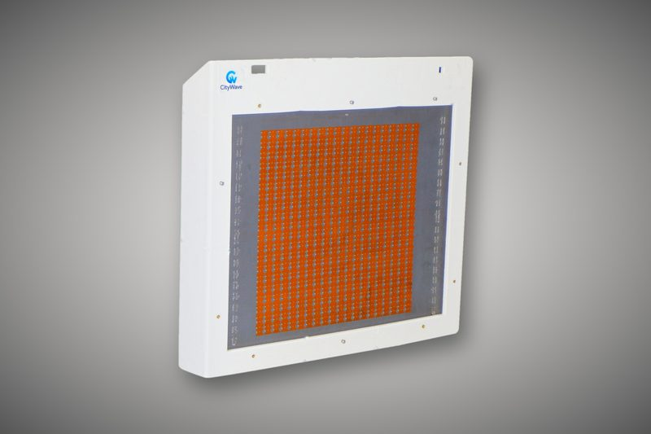
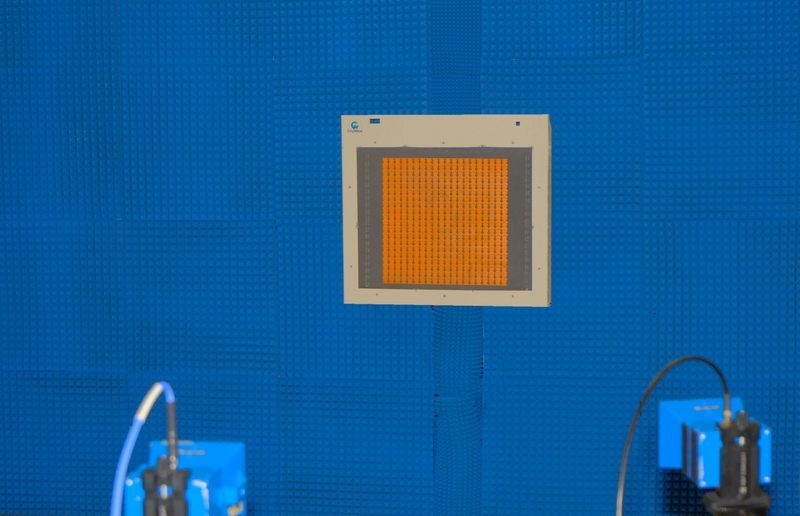
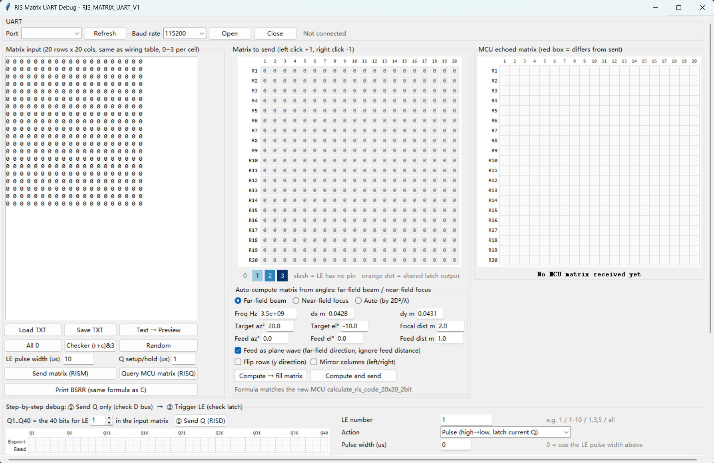

Our active RIS panel combines power amplification with intelligent beam control, giving high-gain, interference-free coverage for dense urban districts, industrial areas, and transport hubs. Deployed alongside existing base stations, with a cloud-hosted software control platform.
A near-zero-power, ultrathin panel that redirects signal into coverage gaps — no cabling, no power supply required. Ideal for IoT deployments, rural areas, and energy-constrained environments. Mounts like a mural; configured via a shared cloud platform.

